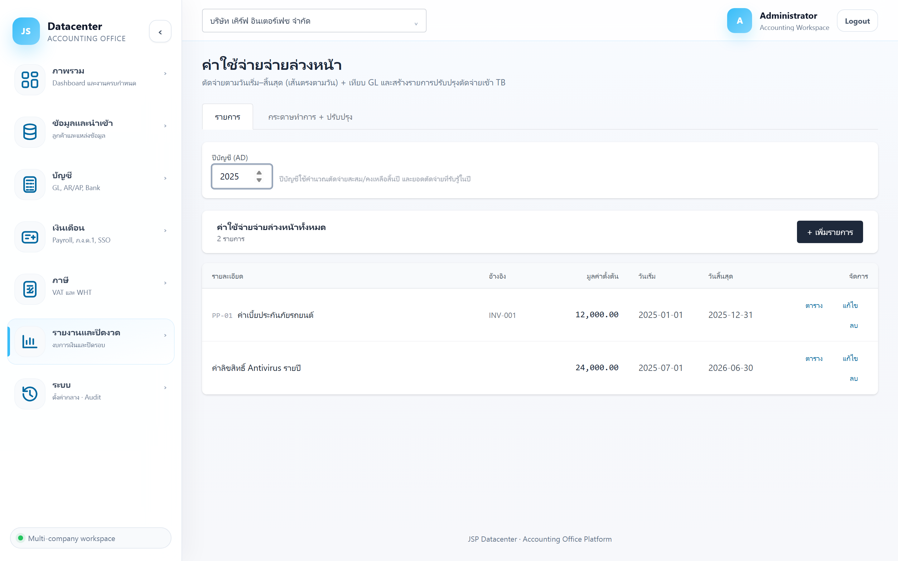
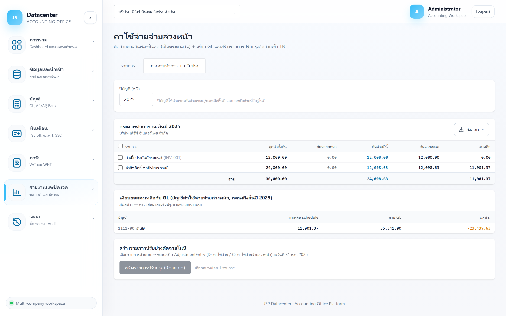

ค่าใช้จ่ายจ่ายล่วงหน้า
ทะเบียนค่าใช้จ่ายที่จ่ายล่วงหน้าแล้วต้องทยอยตัดเป็นค่าใช้จ่ายตามงวด — เช่น ค่าเบี้ยประกัน ค่าเช่าจ่ายล่วงหน้า ค่าบริการรายปี พร้อมสร้างรายการปรับปรุงตัดจ่ายเข้างบให้
จ่ายเงินก้อนวันนี้แต่ได้ประโยชน์หลายงวด → ตอนจ่ายลงเป็น สินทรัพย์ แล้วทยอยโอนเป็น ค่าใช้จ่ายตามช่วงเวลา — ระบบคำนวณสัดส่วนของแต่ละปีให้จากวันเริ่มถึงวันสิ้นสุด
1. การเข้าใช้งาน
- เลือกบริษัทลูกค้า ที่แถบด้านบน
- เปิดเมนู รายงานและปิดงวด → ค่าใช้จ่ายจ่ายล่วงหน้า
- กรอก ปีบัญชี (ค.ศ.) ที่จะตัดจ่าย
รายการเหล่านี้ไม่ได้อยู่ใน Express เป็นทะเบียนแยก — บันทึกครั้งเดียวตอนเริ่มสัญญา แล้วระบบจะตัดจ่ายให้ทุกปีจนครบเอง
2. แท็บทะเบียน

| คอลัมน์ | ความหมาย |
|---|---|
| รายละเอียด | ชื่อรายการ เช่น “เบี้ยประกันภัยรถยนต์ ทะเบียน กก-1234” |
| อ้างอิง | เลขที่กรมธรรม์/สัญญา/ใบเสร็จ |
| มูลค่าตั้งต้น | ยอดที่จ่ายล่วงหน้าทั้งก้อน |
| วันเริ่ม / วันสิ้นสุด | ช่วงเวลาที่ได้ประโยชน์ — ใช้กระจายค่าใช้จ่าย |
| ตาราง / แก้ไข | ปุ่มท้ายแถว · รายการที่ตัดครบแล้วมีป้าย (ปิด) |
ฟอร์มบันทึกรายการ
| ช่อง | คำอธิบาย |
|---|---|
| รหัส / รายละเอียด | รหัสอ้างอิงภายในและชื่อรายการ |
| เอกสารอ้างอิง | เลขที่เอกสารต้นทาง |
| มูลค่าตั้งต้น | ยอดที่จ่ายล่วงหน้า |
| วันเริ่ม / วันสิ้นสุด | ช่วงเวลาที่ได้ประโยชน์ — วันเริ่มต้องไม่เกินวันสิ้นสุด ไม่งั้นบันทึกไม่ผ่าน |
| ค่าใช้จ่ายจ่ายล่วงหน้า (สินทรัพย์) * | บัญชีสินทรัพย์ที่ตั้งไว้ตอนจ่าย (บังคับ) |
| ค่าใช้จ่าย (P&L) * | บัญชีค่าใช้จ่ายปลายทางที่จะโอนเข้า (บังคับ) |
| หมายเหตุ | บันทึกเพิ่มเติม |
ปุ่ม “ตาราง” (ตารางตัดจ่าย)
แสดงการตัดจ่ายของรายการนั้นแยกตามปี — ยกมา · ตัดจ่ายปีนี้ · สะสม · คงเหลือ รายการที่ตัดครบแล้วจะขึ้นว่า (ตัดจ่ายครบแล้ว)
3. แท็บ “กระดาษทำการ + ปรับปรุง”

| คอลัมน์ | ความหมาย |
|---|---|
| มูลค่าตั้งต้น | ยอดที่จ่ายล่วงหน้าทั้งก้อน |
| ตัดจ่ายยกมา | ตัดไปแล้วในปีก่อน ๆ |
| ตัดจ่ายปีนี้ | ยอดที่ต้องรับรู้เป็นค่าใช้จ่ายของปีนี้ |
| ตัดจ่ายสะสม | ยกมา + ปีนี้ |
| คงเหลือ | ส่วนที่ยังเป็นสินทรัพย์ยกไปปีหน้า |
เทียบยอดกับ GL
ตารางเทียบ คงเหลือ schedule กับ ตาม GL พร้อม ผลต่าง — ยอดคงเหลือตามทะเบียนควรตรงกับยอดบัญชีค่าใช้จ่ายจ่ายล่วงหน้าในสมุดบัญชี
สร้างรายการปรับปรุงตัดจ่าย
- ติ๊กเลือกรายการ ที่ต้องการตัดจ่ายในปีนั้น (ถ้าไม่เลือกจะขึ้น “เลือกอย่างน้อย 1 รายการ”)
- กดปุ่มสร้างรายการปรับปรุง
- ตรวจใบที่สร้างได้ที่ กระดาษทำการปิดงบ
เหมือนค่าเสื่อมและดอกเบี้ย — ระบบไม่กันการสร้างซ้ำ ให้ตรวจที่หน้ากระดาษทำการปิดงบก่อนกดครั้งที่สอง
4. ตัวอย่างการใช้งาน
รอบบัญชีปฏิทิน: ปี 2025 ตัดจ่าย 6 เดือน = 12,000 · ปี 2026 ตัดอีก 12,000 — บันทึกครั้งเดียวแล้วกดสร้างรายการปรับปรุงในแต่ละปี ระบบคำนวณสัดส่วนให้เอง
5. ปัญหาที่พบบ่อย
| อาการ | สาเหตุและวิธีแก้ |
|---|---|
| ทะเบียนว่างเปล่า | ยังไม่ได้บันทึกรายการ — รายการเหล่านี้ไม่ได้มาจาก Express ต้องบันทึกเองครั้งแรก |
| บันทึกไม่ผ่าน ขึ้น “วันเริ่มต้องไม่เกินวันสิ้นสุด” | สลับวันที่ผิด — แก้แล้วบันทึกใหม่ |
| ตัดจ่ายปีนี้เป็น 0 | ช่วงคุ้มครองไม่ครอบคลุมปีที่เลือก หรือรายการตัดจ่ายครบแล้ว (จะมีป้าย “ตัดจ่ายครบแล้ว”) |
| สร้างรายการปรับปรุงไม่ได้ | ยังไม่ได้ผูกบัญชีสินทรัพย์และบัญชีค่าใช้จ่าย (ทั้งสองช่องบังคับ) |
| ผลต่างกับ GL ไม่เป็นศูนย์ | ยังไม่ได้สร้างรายการปรับปรุงของปีนั้น หรือมีการตัดจ่ายบันทึกไว้ใน Express อยู่แล้ว |
กระดาษทำการปิดงบ → เพื่อดูรายการปรับปรุงทั้งหมดรวมกัน